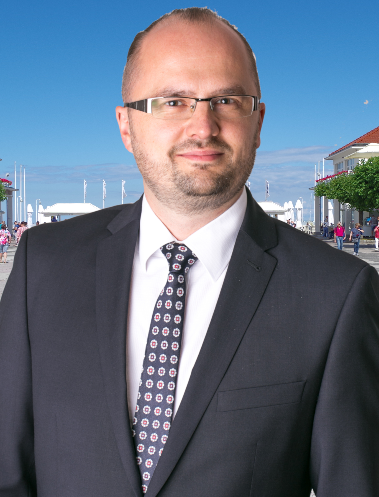

O radnym
Piotr Jerzy Meler (ur. 11 września 1975 r. w Gdańsku) to doświadczony polski samorządowiec, inżynier oraz wieloletni członek Rady Miasta Sopotu. Od wielu kadencji aktywnie reprezentuje mieszkańców, angażując się w sprawy lokalnej społeczności, gospodarki przestrzennej oraz rozwój infrastruktury miejskiej. W wyborach samorządowych uzyskał mandat z okręgu wyborczego nr 3.
Wykształcenie i kwalifikacje
Piotr Meler posiada wszechstronne wykształcenie techniczne oraz menedżerskie, stanowiące solidny fundament dla działalności samorządowej oraz zarządzania w sektorze gospodarczym:
- Inżynier Budownictwa – wykształcenie inżynierskie dające silne przygotowanie z zakresu infrastruktury i procesów inwestycyjnych.
- Magister Inżynier Energetyki – specjalistyczne wykształcenie wyższe w strategicznym sektorze energetycznym.
- Studia Executive MBA – ukończone w prestiżowej Gdańskiej Fundacji Kształcenia Menedżerów (GFKM), potwierdzające najwyższe kwalifikacje w dziedzinie zarządzania biznesem, finansami oraz zespołami ludzkimi.
Doświadczenie menedżerskie i biznesowe
Dzięki unikalnemu połączeniu wiedzy inżynierskiej i menedżerskiej, Piotr Meler przez wiele lat z sukcesami zarządzał dużymi podmiotami gospodarczymi w sektorze nowoczesnej energii:
- Energa Wytwarzanie S.A. – jako Prezes Zarządu odpowiadał za strategiczny obszar produkcji energii elektrycznej i cieplnej, skupiając się na rozwoju odnawialnych źródeł energii (OZE), takich jak elektrownie wodne czy farmy wiatrowe. Kierował również Elektrownią Ostrołęka B zapewniającą stabilną i czystą energię z węgla w północno-wschodniej Polsce
- Energa Oświetlenie Sp. z o.o. – jako Prezes Zarządu zarządzał rozbudowaną strukturą nowoczesnego oświetlenia miejskiego oraz projektami modernizacji infrastruktury na Pomorzu.
Kluczowe informacje samorządowe
- Wiek: 50 lat
- Okręg wyborczy: Okręg nr 3, Sopot
- Doświadczenie: Wielokrotny radny Sopotu, aktywny uczestnik prac komisji miejskich, w przeszłości kandydat na urząd prezydenta Sopotu.
Działalność i stanowisko
Jako radny Sopotu, Piotr Meler aktywnie broni interesów lokalnej społeczności. W debatach publicznych często zwraca uwagę na potrzebę zachowania autonomii mniejszych pomorskich gmin oraz racjonalne gospodarowanie budżetem i przestrzenią miejską.
"Ta ustawa jest bardzo niekorzystna dla mniejszych gmin, które tracą bardzo dużo kompetencji, zbyt dużo jak na założenia metropolii..."
— Piotr Meler dla Radia Gdańsk o ustawie metropolitalnej
Oficjalny skład Rady Miasta Sopotu